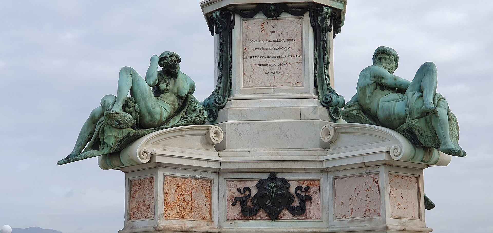

圣洛伦佐教堂后侧的美第奇家族陵墓，两大部分：米开朗基罗设计的新圣器室（1520-1534，含《昼夜晨暮》四尊寓意像）与 16 世纪硬石镶嵌的亲王礼拜堂。规模不大，却是理解“佛罗伦萨 = 美第奇”的钥匙。
看点路线
Il Percorso
- 1新圣器室：先看洛伦佐公爵墓（《晨》《暮》），再看朱利亚诺墓（《昼》《夜》）
- 2《美第奇圣母》与两位“思想者”公爵坐像
- 3入口小间：豪华者洛伦佐与弟弟朱利亚诺的朴素石棺
- 4亲王礼拜堂：硬石镶嵌墙面与空石棺（遗骨都在地下）
重点展品
Le Cappelle · 5 件必看

《夜》与《昼》
朱利亚诺·德·美第奇墓棺盖上：女子《夜》怀抱罂粟入睡，肌肉男子《昼》只凿了一半便永远扭头不看观众。墓主人的姿态是“时刻准备起身”--生命是白昼与黑夜之间的一场短暂执勤。
《晨》与《暮》
洛伦佐·德·美第奇（乌尔比诺公爵）墓上一对寓意像：《晨》女子的苏醒与《暮》男子的沉坠。这组墓像的构图哲学影响深远：雕塑不再是“站着的英雄”，而是时间的囚徒。
《美第奇圣母》
新圣器室的灵修核心：圣母与圣婴。这是米开朗基罗留给美第奇家族的“宽恕像”--他 1534 年离开佛罗伦萨赴罗马画《最后的审判》，这组作品永远停在了未完成状态。
豪华者洛伦佐的朴素石棺
入口小间里一块几乎无雕饰的石板，下面躺着“豪华者”洛伦佐与弟弟朱利亚诺--1478 年帕齐阴谋中，兄弟俩在 Cathedral 弥撒时遇刺，弟弟当场死亡。米开朗基罗在新圣器室为两位同名晚辈公爵造了宏墓，却给真正的家族天才只留了一块素石：历史自己会排座次。
亲王礼拜堂
八角大厅墙面与地面全是佛罗伦萨硬石镶嵌（pietre dure）：碧玉、玛瑙、大理石拼出托斯卡纳 26 城徽章。石棺多数是空的--大公们的遗骨都在地下墓室。这座大厅是“用石头炫富”的极致，与隔壁米开朗基罗的素朴形成刻意的对照。
历史故事
Le Storie
壹《夜》的谜语
《夜》完成后，佛罗伦萨诗人乔万尼·斯特罗齐为它写了一首铭诗："沉睡的《夜》，你在石头中沉睡，如此安详--只要世上还有耻辱与灾难，我愿长睡不醒。"
米开朗基罗亲自用诗回复："只要世上还有耻辱与灾难，看不见、听不见，便是我的福气。所以别唤醒我，请轻声说话。"
写这些句子时（1530 年前后），佛罗伦萨共和国刚被美第奇与帝国军队碾灭，米开朗基罗因曾为共和国修城防而差点被清算。为推翻共和国的家族雕陵墓，他的屈辱、愤懑与疲惫，全部沉进《夜》紧闭的眼睑里--这是艺术史上最沉重的“回帖”。
贰密室：米开朗基罗的地下涂鸦
1530 年，为躲避美第奇复辟后的清算，米开朗基罗在新圣器室下面一个小房间里藏身数周。1975 年，这个房间被重新发现：墙上全是他的炭笔涂鸦--《最后的审判》里那种扭曲人体的草稿、但丁的头像、自画像。
这些炭笔线是米开朗基罗存世的极少数手绘原迹，2023 年起对公众限流预约开放（每周少量名额，需官网抢）。即便约不上，知道“你脚下半米处有一个天才的避难所”，整个礼拜堂的空气都会不一样。
藏身结束后他被教皇克莱门特七世（本人就是美第奇家的人）赦免，条件正是：回来继续给美第奇家修陵墓。权力与天才的和解，从来不看心情，只看账本。
参观贴士
Consigli Pratici
- 只开上午（13:50 停止入场），排行程务必放上午；与圣洛伦佐教堂、洛伦佐图书馆同建筑群可连游
- 每月第 2、4 个周一闭馆，其余周一开放--出发前官网复核
- 展馆小、人少、光线佳，适合静静看一小时；语音导览把《昼夜晨暮》的寓言讲得很透
- 与 Duomo 登顶同日安排注意体力（都是“仰头”项目）
- "米开朗基罗密室"需另约且名额极少，官网每月放号，抢到就是奇迹
顺路同游
Da Non Perdere